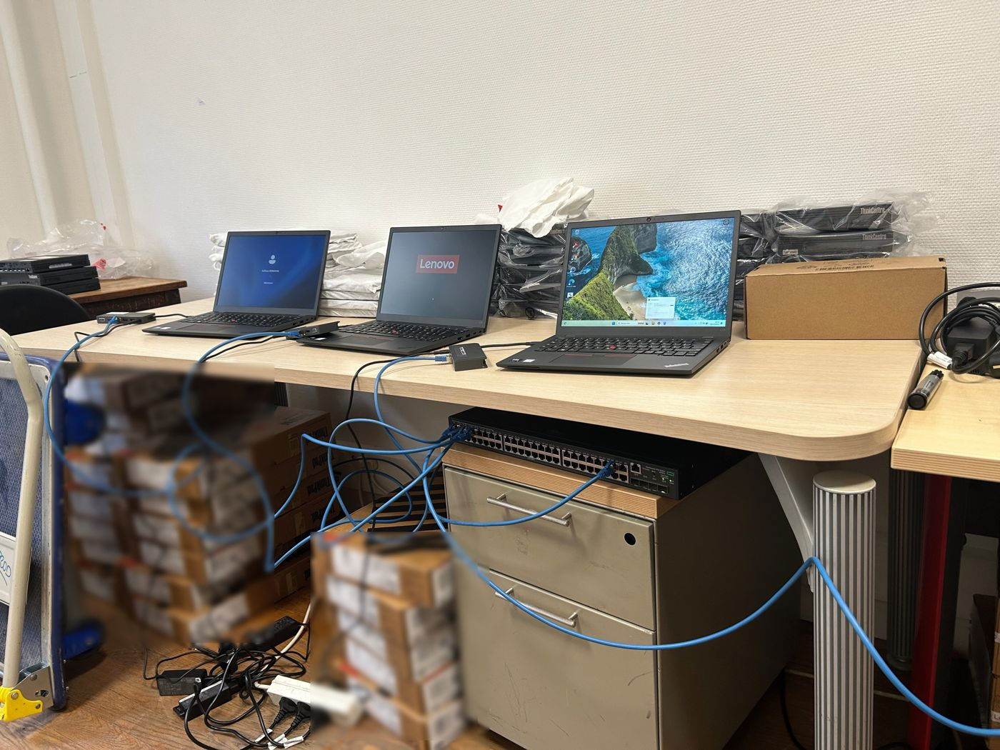

Migration du parc vers Windows 11
Migrer un parc bancaire de Windows 10 vers Windows 11 : inventaire des postes neufs, mastérisation par PXE, migration des données, relance des utilisateurs et contrôle final.
- Windows 11
- SCCM (PXE, séquence de tâches)
- GLPI
- Active Directory
- Excel
Avant la fin du support de Windows 10, le parc devait passer sous Windows 11. Les postes compatibles étaient mis à niveau sur place par leurs utilisateurs, les autres remplacés par du matériel neuf. J'ai pris en charge la préparation des postes, le suivi et l'accompagnement, en lien avec l'équipe d'administration.
Postes neufs inventoriés et standardisés (image Windows 11 unique, antivirus, mises à jour), anciens postes retirés et décommissionnés, données de chaque utilisateur contrôlées avec une checklist, et parc compatible relancé jusqu'à la mise à niveau.
Étapes de réalisation
- Inventaire des nouveaux postes. Identifiant unique par machine, scan des numéros de série et adresses MAC à la douchette, fichier prêt pour l'import GLPI.
- Retrait et stockage des anciens postes. Étiquetage par provenance, suivi dans le fichier de pilotage, puis décommissionnement avec l'équipe (AD, antivirus, GLPI).
- Déploiement et mastérisation. Banc de mastérisation, BIOS préparé, démarrage PXE et séquence de tâches SCCM avec une image Windows 11 standard.
- Migration des données. Sauvegarde sur le NAS avant retrait, puis contrôle de chaque profil avec une checklist.
- Campagne de communication et relance. Relance téléphonique des utilisateurs en retard et guide de mise à niveau en 3 étapes.
- Contrôle post-migration. Vérification de la conformité, aide à la prise en main et remontée des incompatibilités aux administrateurs.
Détail de chaque étape
Chaque étape est documentée sur sa propre page : démarche, outils, difficultés et résultats.
Captures

Difficultés rencontrées
- Coordonner les utilisateurs et relancer sans bloquer leur activité.
- Déployer par vagues pour ne pas saturer le réseau.
Compétences
- Gestion de parc
- Déploiement PXE / SCCM
- Communication utilisateurs
- Suivi de projet